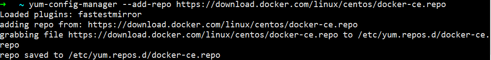
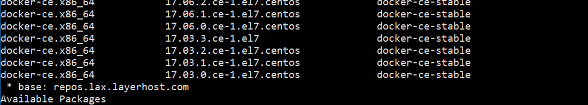
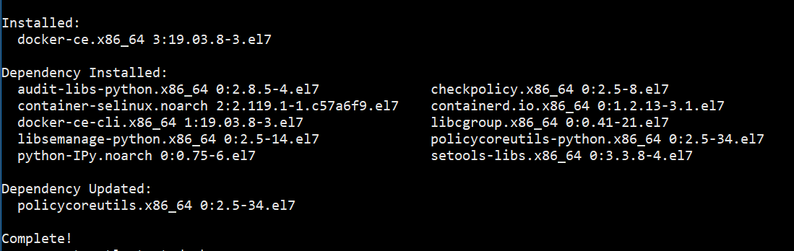

首先设置yum源
1 | yum-config-manager --add-repo https://download.docker.com/linux/centos/docker-ce.repo |

检查是否更新成功
1 | yum list docker-ce --showduplicates | sort -r |

安装docker，我这里就不指定版本了
1 | yum install docker-ce -y |

运行且设置开机启动
1 | systemctl start docker && systemctl enable docker |